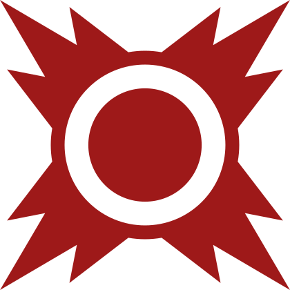

Les Sith
L'Ordre Sith, dont les membres étaient communément appelés les Sith, était une ancienne communauté d'utilisateurs du côté obscur de la Force guidés par leur haine et leur colère et dont le seul but était d'asseoir leur suprématie sur la galaxie. Fondé par un Jedi renégat plus de 5000 ans avant la bataille de Yavin, l'Ordre Sith s'étendit alors rapidement dans la galaxie et un conflit perpétuel s'installa alors entre les Sith et l'Ordre Jedi dont le but était de maintenir la paix et la justice au sein de l'Ancienne République.

| Apparaît dans : | La Menace fantôme, L'Attaque des clones, La Revanche des Sith |
|---|---|
| Côté de la force : | Obscur |